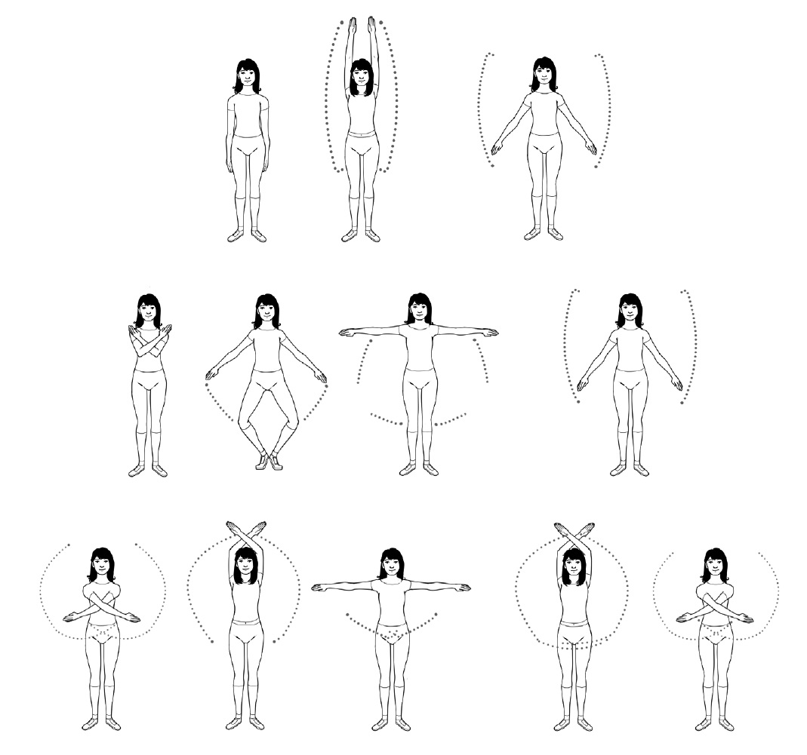
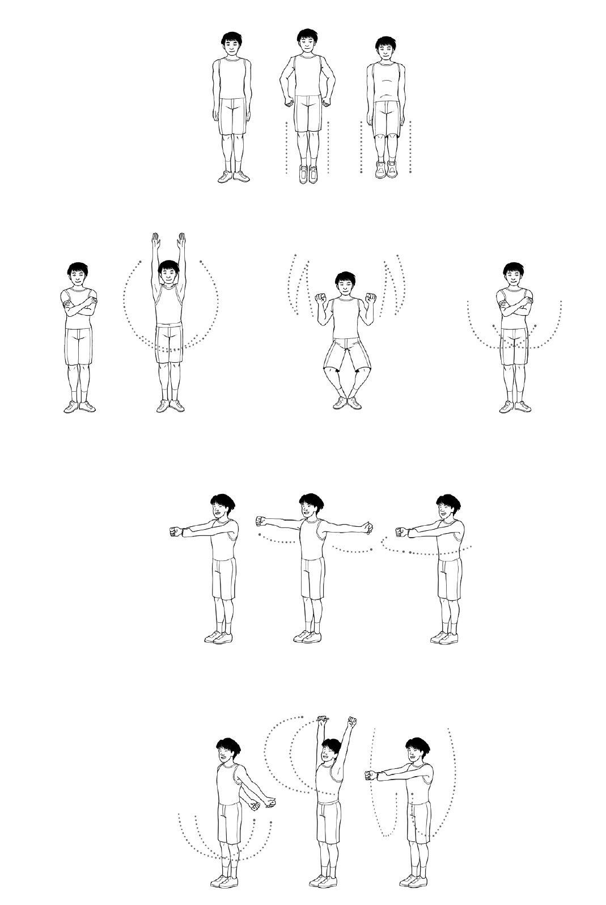

Yoga
Popular in Japan as well as in the West, yoga can be done by almost anyone.
Some of its poses have even been adapted for pregnant women and practitioners
with physical disabilities.
Yoga comes from India, where it was developed millennia ago to unite our mental and physical elements. The word yoga itself comes from the Sanskrit term
for “yoke,” which refers to the crosspiece that binds draft animals to one another
and to the cart they’re pulling. Yoga strives to unite body and mind in the same
way, guiding us toward a healthy lifestyle in harmony with the world around us.
The main objectives of yoga are:
To bring us closer to our (human) nature
Mental and physical purification
To bring us closer to the divine
Styles of yoga
Though all are oriented toward similar goals, there are many different types of
yoga that vary according to the traditions and texts from which they were
developed. The differences among them lie, as the masters say, in the path taken
to the summit of our best self.
Jnana yoga: the yoga of wisdom; the search for discipline and mental growth
Karma yoga: focuses on action, on tasks and duties that benefit oneself and one’s community
Bhakti yoga: the yoga of devotion and surrender to the divine
Mantra yoga: focuses on the recitation of mantras to reach a state of relaxation
Kundalini yoga: combines diverse steps to reach the desired mental state Raja yoga: also known as the royal path; encompasses a range of steps geared toward achieving communion with oneself and others
Hatha yoga: the most widespread form in the West and Japan; characterized by asanas or poses combined in a quest for balance How to do a Sun Salutation
The Sun Salutation is one of the most iconic exercises in hatha yoga. To do it, you simply have to follow these twelve basic movements:
1. With your feet together, stand up straight but keep your muscles relaxed.
Exhale.
2. Place the palms of your hands together in front of your chest; from this position, inhale as you raise your arms above your head and bend backward slightly.
3. Exhale as you bend forward until you touch the ground with the palms of your hands, without bending your knees.
4. Stretch one leg back to touch the floor with the tips of your toes. Inhale.
5. Bring the other leg back, keeping your legs and arms straight, as you hold your breath.
6. As you exhale, bend your arms and bring your chest to the ground and then forward, resting your knees on the ground.
7. Straighten your arms and bend your spine back, keeping the lower half of your body on the ground. Inhale.
8. With your hands and feet on the ground, lift your hips until your arms and legs are straight and your body forms an upside-down V. Exhale throughout the movement.
9. Bring forward the same leg you’d stretched back earlier and bend it so that your knee and foot are aligned under your head and between your hands.
Inhale.
10. Exhale as you bring your back foot forward and straighten your legs, keeping
your hands on the ground as in posture 3.
11. Bring your arms above your head with your palms together and bend
backward slightly, as you did in posture 2, while you inhale.
12. Lower your arms to their initial position in mountain pose while you exhale.
You’ve just greeted the sun; now you’re ready to have a fantastic day.